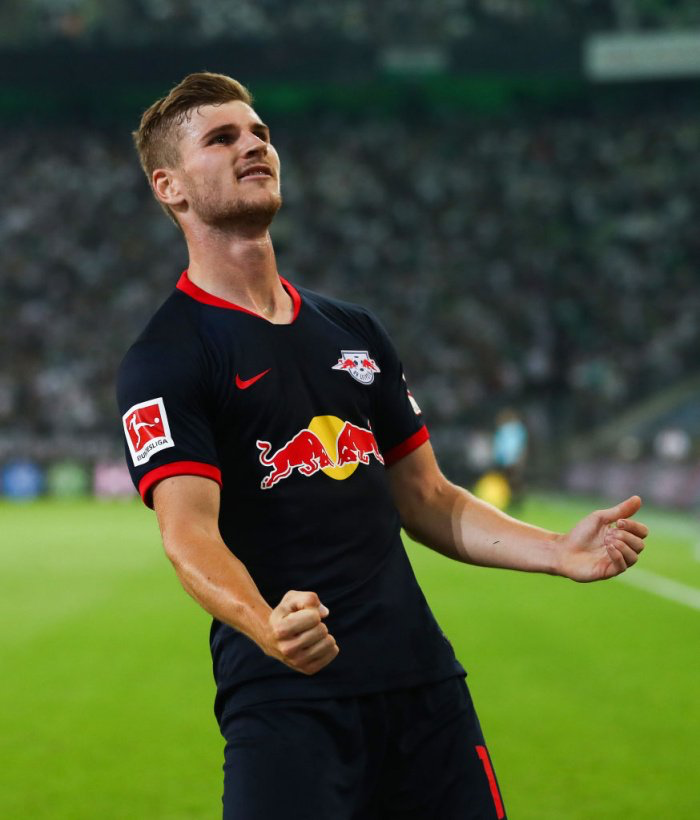
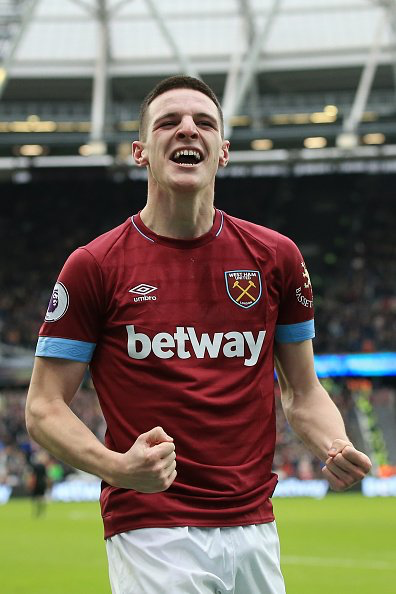

Á þessari síðu verður farið stuttlega yfir stöðu Manchester United í félagsskiptaglugganum sem fer í gang í Janúar næstkomandi.
Timo Werner er sterklega orðaður við Man Utd. Hann er búinn að skora 13 mörk í síðustu 15 leikjum og hann setti þrennu í síðasta leik.

Timo Werner er orðaður við Man Utd.
Declan Rice er einnig orðaður við Man Utd, hann er þó aðeins 20 ára gamall og á því bjarta framtíð framundan.

Declan Rice í leik fyrir West Ham